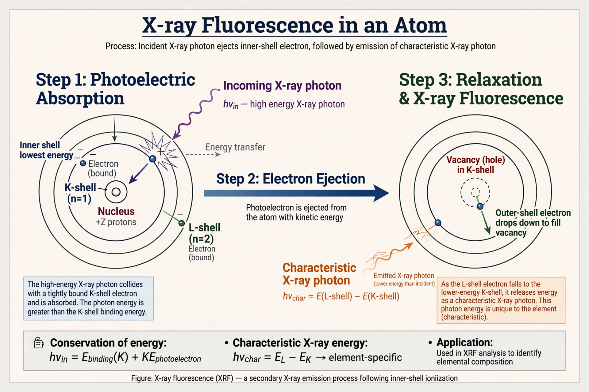

From Wikipedia, the free encyclopedia
X-ray spectroscopy is a general term for several spectroscopic techniques for characterization of materials by using x-ray excitation. When an electron from the inner shell of an atom is excited by the energy of a photon, it moves to a higher energy level. When it returns to the low energy level, the energy which it previously gained by the excitation is emitted as a photon which has a wavelength characteristic of the element (there could be several characteristic wavelengths per element).

Henry Moseley discovered in 1913–14 that the frequency of characteristic X-ray lines varies systematically with atomic number (Moseley's law), enabling definitive identification of elements and revealing missing places in the periodic table. Karl Manne Siegbahn won the 1924 Nobel Prize in Physics for precision X-ray spectroscopy, and Kai Siegbahn the 1981 prize for X-ray photoelectron spectroscopy (ESCA).
X-ray spectroscopy is used in materials science, geology, environmental analysis, archaeology, forensics and semiconductor characterisation, as well as in X-ray astronomy for hot cosmic sources.
See also: Spectroscopy, X-ray.